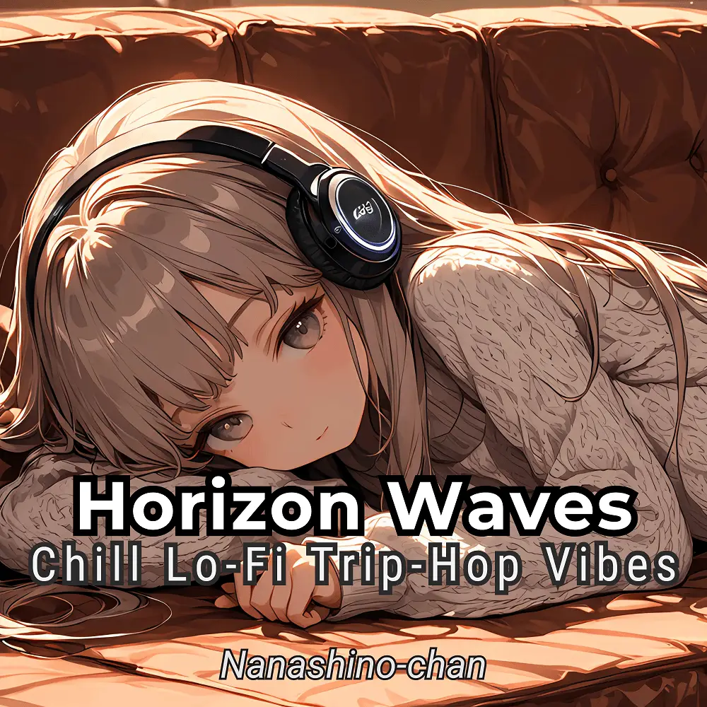

Trip-Hop · Lo-Fi · Chill
Horizon Waves: Chill Lo-Fi Trip-Hop Vibes
Nanashino-chan
Nanashino-chanの「Horizon Waves: Chill Lo-Fi Trip-Hop Vibes」。Trip-Hop / Lo-Fi / Chillを楽しめる全24曲のインストゥルメンタル作品です。「Moonlit Pathways / Dreamy Drift」などを収録。気になる曲を試聴して、配信サービスでお気に入りを見つけてください。
2025-03-22 リリース · 24 曲 · Instrumental
アルバムを試聴
気になる音楽を、ここから。
曲を選ぶまでジャケットを表示します。試聴にはYouTubeを使用します。
YOUTUBE PREVIEW
試聴する曲を選んでください
曲を選ぶまでジャケットを表示します。試聴にはYouTubeを使用します。
再生できない場合は、配信サービスでアルバムや曲を開いてください。
配信サービスでアルバムを探す
「検索」のリンクは検索結果を開きます。サービス内でアルバムや曲を選択してください。
収録曲一覧 24
- 01Moonlit Pathways
- 02Dreamy Drift
- 03Floating Echoes
- 04Deep Bass Reflections
- 05Whispers in the Dark
- 06Midnight Waves
- 07Mystic Chill
- 08Urban Twilight
- 09Hazy Memories
- 10Velvet Skies
- 11Shadows & Echoes
- 12Stardust Rhythms
- 13Whispers of Dusk
- 14Lunar Flow
- 15Calm Horizons
- 16Fading Light.
- 17Soft Reverie
- 18Nocturnal Journey
- 19Cosmic Breeze
- 20Serene Vibes
- 21Chasing Stars
- 22Mellow Voyage
- 23Dream Weaver
- 24Twilight Reflections
SNSで使いたい音源を探す
「Nanashino-chan ＋ 曲名」をコピーして、SNSアプリの音源検索に貼り付けてください。音源の表示は地域やアカウントにより異なります。コピー機能は利用許諾を付与するものではありません。